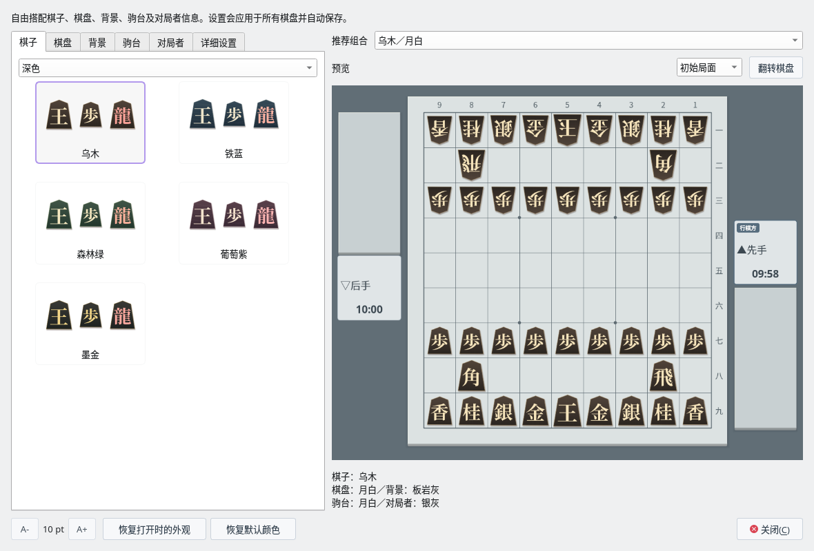
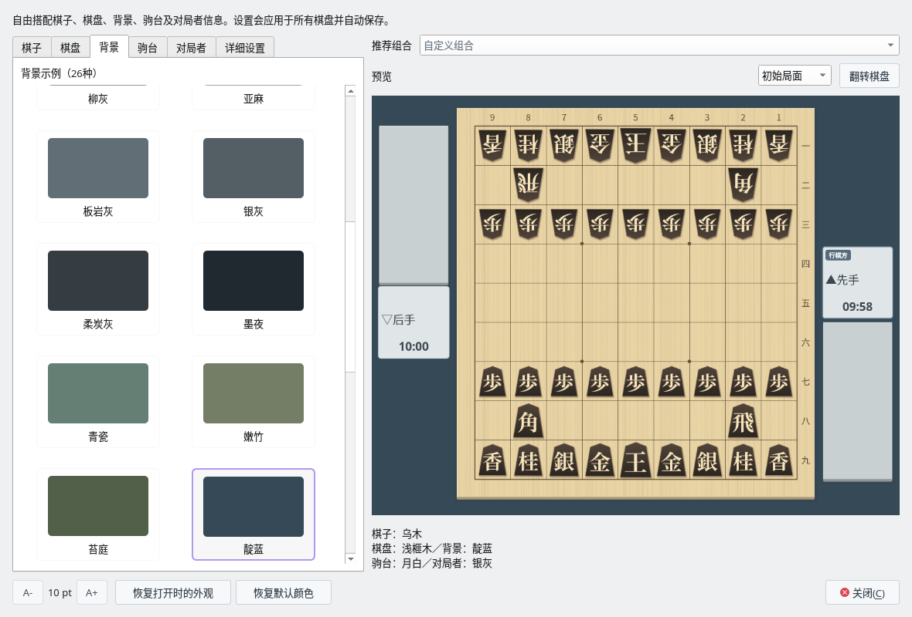
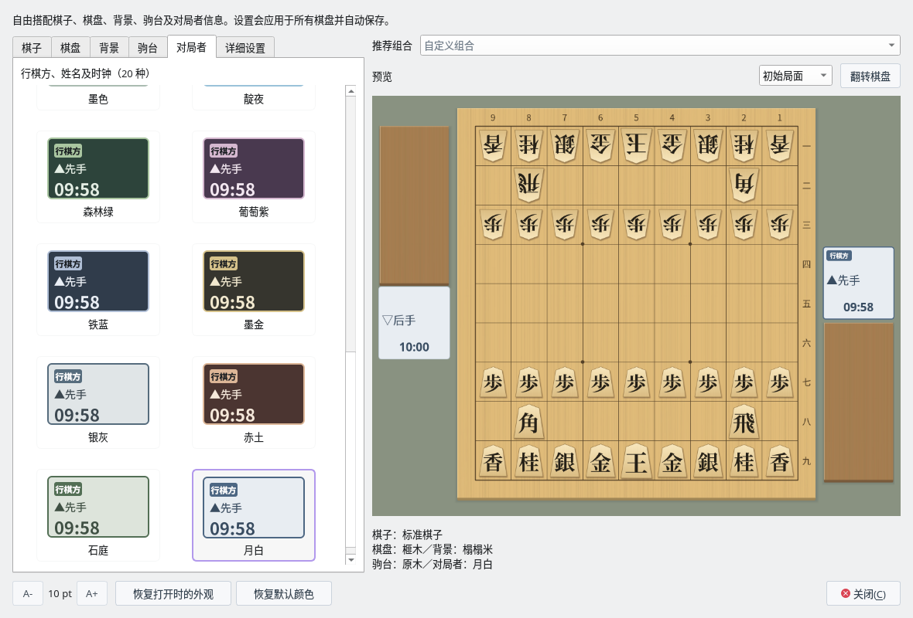
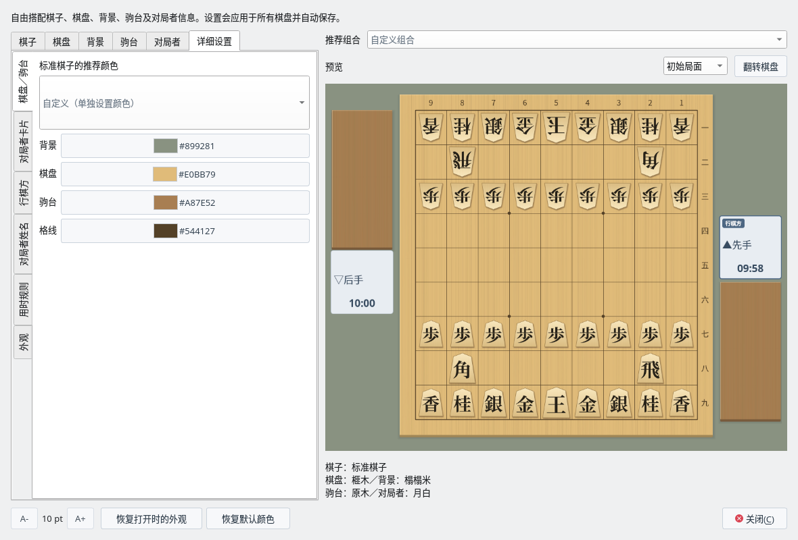

对局外观
从样本中自由组合 5 个部件
截图在 Linux 上以简体中文界面拍摄。
打开外观窗口
选择“视图”→“对局外观…”。以前的“棋子样式”“棋盘配色”菜单已合并到这个窗口。
在左侧选择样本，在右侧的预览中确认整体组合效果。所选内容会立即应用到所有棋盘并自动保存。预览下方显示当前所选 5 个部件的名称。


推荐组合“乌木／月白”（棋子标签页按“深色”筛选）
分别选择 5 个部件
| 标签页 | 样本 | 改变的范围 |
|---|---|---|
| 棋子 | 40 种 | 标准、虎纹、原木、浅色、深色、战国汉字、国际象棋风格和字母棋子。可以按组筛选（棋子样式）。 |
| 棋盘 | 26 种 | 棋盘的颜色、木纹和格线。 |
| 背景 | 26 种 | 棋盘和驹台周围的背景色。 |
| 驹台 | 26 种 | 放置持驹的台的颜色和木纹。 |
| 对局者 | 20 种 | 卡片、“行棋方”标记、对局者姓名、用时及警告时的颜色。 |
在各标签页中选择时，其他部件不会改变。更换棋盘时背景色保持不变，更换背景时棋盘的颜色、木纹和格线也保持不变。棋盘和驹台的木纹也可以分别设置。
| 部件 | 样本 |
|---|---|
| 棋盘 | 榧木・浅榧木・金榧木・琥珀・胡桃木・深棕・浅桐木・亚麻・月白・银灰・柔炭灰・墨夜・青瓷・嫩竹・苔庭・靛蓝・淡樱・藤灰・砂岩・蓝灰 |
| 背景 | 榻榻米・浅绿・松绿・深棕・胡桃木・炭灰・柳灰・亚麻・板岩灰・银灰・柔炭灰・墨夜・青瓷・嫩竹・苔庭・靛蓝・淡樱・藤灰・砂岩・蓝灰 |
| 驹台 | 原木・浅榧木・金榧木・琥珀木・胡桃木・乌木・浅桐木・亚麻・月白・银灰・柔炭灰・墨夜・青瓷・嫩竹・苔庭・靛蓝・淡樱・藤灰・砂岩・蓝灰 |
棋盘、背景和驹台还各有 6 种与国际象棋风格棋子和字母棋子相配的样本：“国际象棋・木色”“国际象棋・白色”“国际象棋・墨色”“字母・木色”“字母・白色”“字母・墨色”。


将棋盘改为“浅榧木”，背景改为“靛蓝”
推荐组合与预览
可以从“乌木／月白”“浅木／墨夜”“浅虎纹／浅榧木”以及国际象棋风格 9 套、字母 9 套等共 24 种组合开始。选择推荐组合后，会同时改变包括背景在内的 5 个部件。之后也可以分别重新选择各个部件（组合栏会显示“自定义组合”）。
预览与实际的对局画面使用相同的绘制方式。可以用“成驹与持驹”和“翻转棋盘”确认文字和持驹是否易读。预览的局面和翻转操作不会影响正在进行的对局。
行棋方・对局者・用时的 20 种样本
可从春绿・亚麻・瓷白・樱雾・藤雾・青瓷・浅水蓝・沙丘・琥珀・胡桃木・墨色・靛夜・森林绿・葡萄紫・铁蓝・墨金・银灰・赤土・石庭・月白中选择，浅色和深色的卡片都有。


对局者信息的样本（选择月白）
详细调整与设置的保存
在“详细设置”标签页中，可以逐项更改棋盘／驹台、对局者卡片、行棋方、对局者姓名、用时规则共 18 项颜色。背景和边框颜色还可以设置透明度。在“外观”中可以更改棋子大小（90～112%）、棋子阴影，以及棋盘和驹台各自的木纹。单独更改颜色后会显示“自定义（单独设置颜色）”。
“恢复打开时的外观”会恢复打开此窗口时的棋子、颜色和质感。“恢复默认颜色”只把 18 项颜色恢复为默认。
会保存所选外观、窗口大小、最后打开的标签页和棋子筛选。主要变化显示和诘棋的棋盘、导出的棋盘图片也会使用相同的设置。


“详细设置”标签页的“棋盘／驹台”